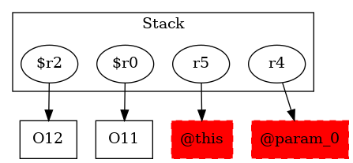

-1 : r5 := @this: Test3
-1 : r4 := @parameter0: testcase.Test3
11 : $r0 = new testcase.Test3
11 : specialinvoke $r0.|testcase.Test3: void |init|()|()
12 : $r2 = new testcase.Test3 ->class soot.jimple.internal.JAssignStmt {Left: class soot.jimple.internal.JimpleLocal, Right: class soot.jimple.internal.JNewExpr}
12 : specialinvoke $r2.|testcase.Test3: void |init|()|()
13 : r4.|testcase.Test3: testcase.Test3 f| = $r0
14 : return
